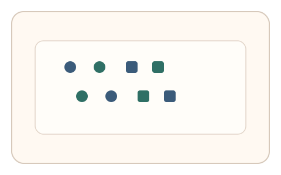
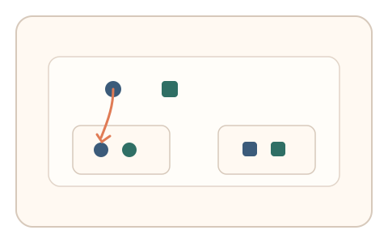
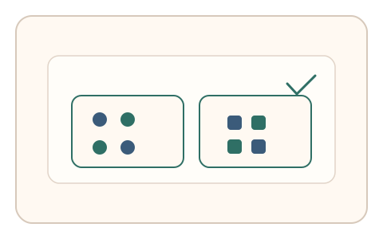

#20
视觉思考范式：空间/结构/直觉
已扩展
形状优先偏置
在轮廓与纹理冲突场景中检测形状优先偏置与拖拽分组轨迹。
概念原文
提供轮廓与纹理冲突的图形集合，让用户快速拖拽分组（按“形状相似”而非纹理相似）。记录分组路径、停顿点与最终分组。
利用人类“形状优先”知觉偏置作为验证信号，而非识别正确与否。
研究背景
视觉知觉中常存在形状优先于纹理的偏置倾向，尤其在快速分组与分类任务中更明显。利用这一偏置可形成可测的选择结果与操作轨迹特征，避免仅依赖答案。
核心机制
- 提供形状与纹理冲突的元素集合。
- 要求用户快速按形状相似拖拽分组。
- 记录分组结果、停顿点与拖拽路径。
- 分析形状优先比例与冲突处的犹豫特征。
用户流程
- 步骤 1：用户看到冲突元素集合与分组区。
- 步骤 2：用户拖拽元素按形状完成分组。
- 步骤 3：系统统计分组倾向与动作特征。
判定信号
形状优先的分组比例
人类在冲突条件下通常仍偏向形状线索。
冲突元素处的停顿与回撤
真实判断存在短暂停顿与纠偏路径。
判定逻辑
以形状优先比例与冲突点停顿时间为核心信号，结合拖拽路径的连贯性进行综合判定；极端一致或毫无停顿均判异常。
对抗面
- 脚本按规则直接按形状分组
- 重放预录拖拽轨迹
防御与缓解
- 动态生成形状与纹理组合，避免模板化脚本
- 引入微时序与路径抖动信号进行多信号耦合
- 在局部加入近似形状扰动，提高伪造成本
可达性与风险
提供高对比与简化元素版本，并允许键盘分组模式，减少精细拖拽要求。
- 部分用户在纹理线索上更依赖，可能造成误拒
- 移动端拖拽精度限制影响信号稳定性
可视化状态

状态 1：冲突元素展示
形状与纹理线索出现冲突。

状态 2：拖拽分组
按形状优先进行拖拽归类。

状态 3：偏置判定
评估形状优先比例与停顿特征。
参考资料
Shape bias
说明形状优先偏置的概念与证据。
Visual perception
说明视觉线索整合与知觉机制。